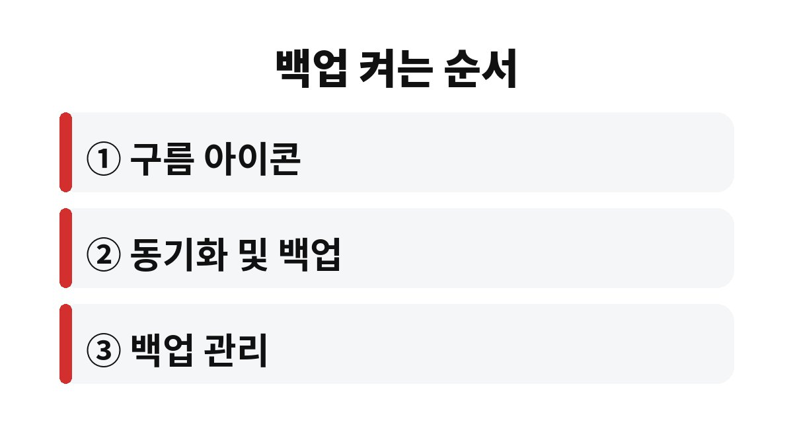

윈도우11 파일 백업은 OneDrive의 폴더 백업을 켜서 바탕 화면, 문서, 사진 폴더를 클라우드에 자동으로 올려 두는 방식이 가장 손이 덜 간다.
노트북이 갑자기 부팅되지 않거나 도난당해도 같은 마이크로소프트 계정으로 로그인하면 파일을 다시 내려받을 수 있다.
설정 위치와 켜기 전에 확인할 용량 문제를 순서대로 적었다.
폴더 백업을 켜면 바탕 화면과 문서 폴더의 실제 위치가 OneDrive 안으로 바뀐다.
겉으로 보이는 경로는 그대로라서 평소에는 차이를 느끼기 어렵다.
대신 한쪽에서 파일을 지우면 클라우드에서도 사라진다.
백업이라기보다 동기화에 가깝다는 점을 먼저 알아 두어야 한다.
담기는 것은 파일뿐이다.
설치한 프로그램이나 로그인 정보까지 통째로 복원되지는 않는다.
새 노트북에서는 프로그램을 다시 설치해야 하고, 사진과 문서만 그대로 돌아온다고 보면 된다.
예를 들어 바탕 화면에 두고 쓰던 견적서를 정리하다 실수로 지우면, 노트북을 닫고 휴대폰 앱을 열어 봐도 이미 파일은 없다.
그래서 폴더 백업을 켠 뒤에는 지우기 전에 한 번 더 보는 습관이 필요하다.
무료로 주어지는 저장 용량은 계정과 요금제에 따라 다르다.
정확한 용량은 OneDrive 설정 화면의 저장 공간 항목에서 확인한다.
사진이 수천 장 쌓인 노트북이라면 용량이 먼저 찰 수 있다.
나는 바탕 화면에 임시 파일을 쌓아 두는 편이라 켜기 전에 먼저 폴더를 훑어보았다.
그 자리에서 쓰지 않는 설치 파일과 영상 몇 개를 지우고 나니 올라갈 양이 눈에 띄게 줄었다.
| 폴더 | 켜기 전 확인할 점 | 용량이 부족할 때 |
|---|---|---|
| 바탕 화면 | 큰 영상 파일이 올려져 있는지 본다 | 큰 파일은 외장 저장장치로 옮긴다 |
| 문서 | 작업 중인 파일 이름이 겹치지 않는지 본다 | 오래된 자료부터 정리한다 |
| 사진 | 휴대폰 사진까지 같이 올라오는지 본다 | 사진 폴더만 끄고 나머지를 유지한다 |
작업 표시줄 오른쪽 아래 구름 모양 아이콘이 OneDrive다.
아이콘이 보이지 않으면 숨겨진 아이콘 화살표를 눌러 찾는다.
로그인이 안 되어 있으면 마이크로소프트 계정부터 연결한다.

처음 올릴 때는 파일이 많을수록 시간이 걸린다.
노트북 전원을 연결해 두고 와이파이가 안정적인 곳에서 진행한다.
끝난 뒤에는 다른 기기의 파일 탐색기에서 같은 폴더가 보이는지도 열어 본다.
폴더를 정리하다 파일을 지웠는데 다른 기기에서도 보이지 않는 경우가 있다.
OneDrive 웹사이트의 휴지통에서 일정 기간 안에 복원할 수 있는 경우가 있으니 바로 확인한다.
회사 자료가 든 업무용 노트북이라면 개인 계정으로 올리는 일이 보안 규정에 걸릴 수 있다.
이 경우에는 회사 IT 담당자가 안내한 방식을 따른다.
회사 보안 규정을 모르겠다면 담당자에게 한 줄 물어보는 편이 빠르다.
동기화가 멈춘 것처럼 보일 때는 구름 아이콘에 표시된 오류 문구를 먼저 읽는다.
파일 이름에 쓸 수 없는 문자가 들어 있거나 경로가 너무 길면 해당 파일만 올라가지 않는 경우가 있다.
설정을 켠 뒤에는 다른 기기나 웹에서 로그인해 파일이 실제로 보이는지 한 번 열어 본다.
이 확인까지 해 두면 그때서야 백업이 되어 있다고 말할 수 있다.
사진 폴더는 휴대폰 갤러리 앱이 따로 올리는 사진과 겹칠 수 있어서 한쪽만 쓰는 편이 용량 관리가 쉽다.
다음에 점검할 것은 외장 저장장치에 중요한 폴더를 하나 더 복사해 두는 일이다.
참고 자료: Microsoft 지원 「PC 백업 활용 안내」(2026년 11월 확인)
※ 2026년 기준 공식 안내를 바탕으로 정리한 글이며, 기기·앱 버전에 따라 메뉴 이름이 다를 수 있다.